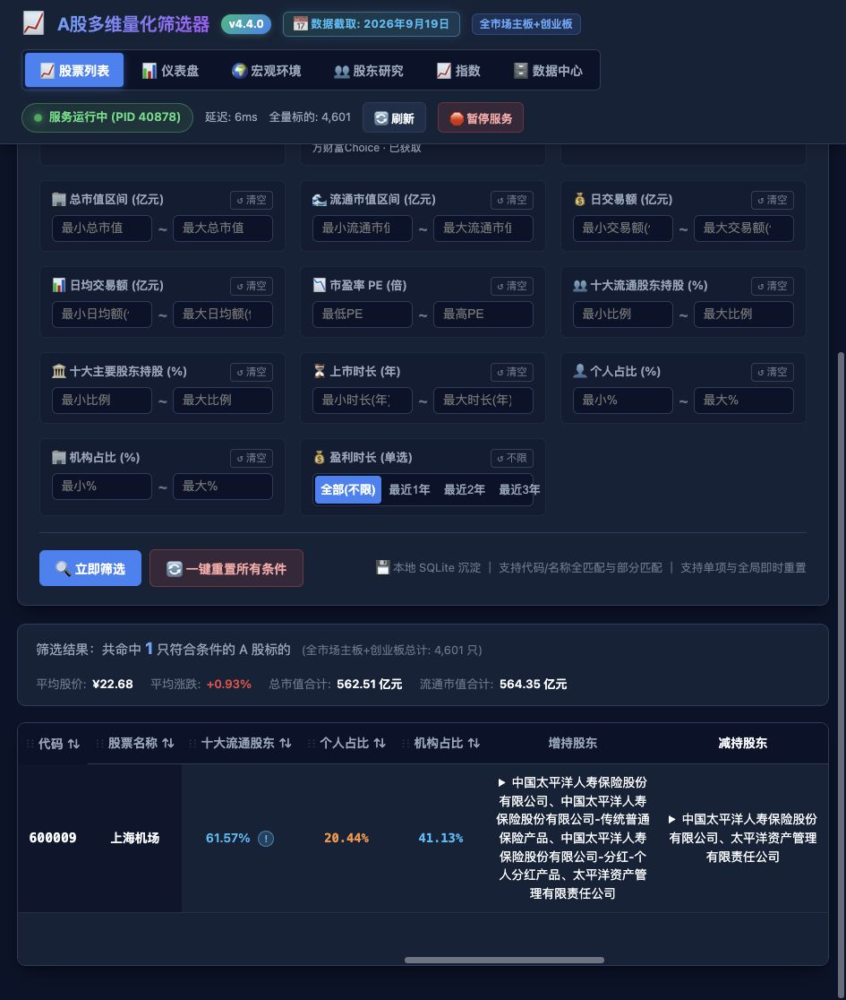
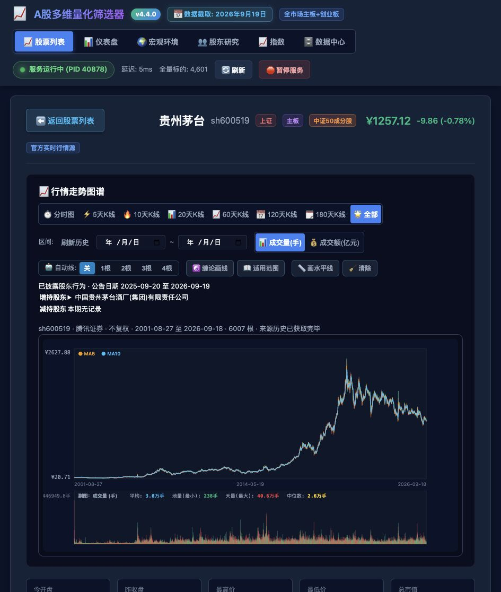

UI-STOCK-LIST · 股票列表
REQ-009：增持/减持股东列、近一年/近三个月披露窗口、全部/增持/减持AND筛选。实际页面新截图。

2026-09-19 · REQ-008/009 v1 · 前版 v4.3.0 · 本地已验收 · 未提交工作区
仅覆盖本轮改动：新增股东列及筛选、调整全历史K线。完整来源为 界面索引。
REQ-009：增持/减持股东列、近一年/近三个月披露窗口、全部/增持/减持AND筛选。实际页面新截图。

REQ-008/009：证券身份与覆盖状态、全历史分页、刷新、显示窗口、股东行为。实际页面新截图。
